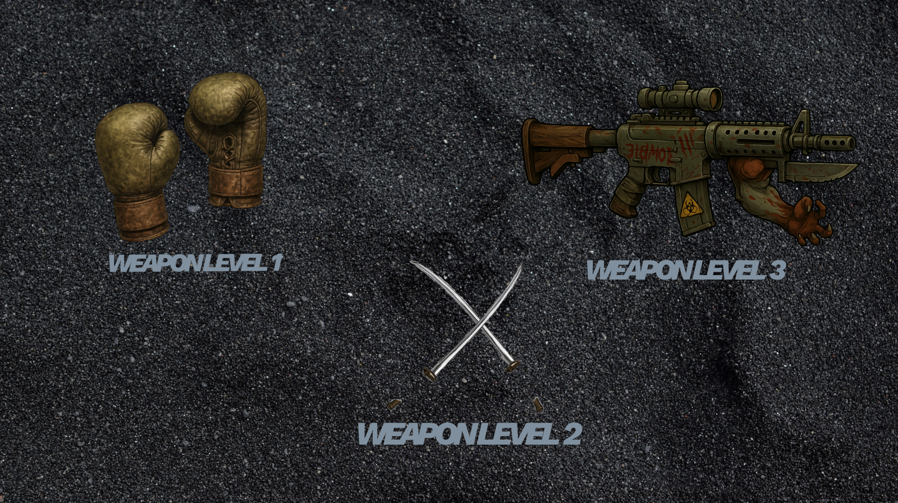

Without weapons to defend ourselves, we could not survie a zombie apocalypse. Zombie Survival gives you a different weapon for each level. Starting with a set of boxing gloves. The apocalypse just started and you can only punch zombies. Besides, this zombies are stupid and they throw their heads at you. Nice way to get rid of them.
You survive to the first stage. The bigger the zombie, a better upgrade as a weapon you will have. Turn yourself in Michone and get to use the Katana. More difficult to handle, but wooahh the pleasure it gives to use it.
What? You have not been eaten yet? Well, prepare yourself, because it gets interesting, just like the weapon you will use in the final level.It wouldn't be an apocalypse without a real machine gun. Zombies have evolved, so your weapon must do so too. Stay tuned and follow us on X for more updates on Zombie Survival.